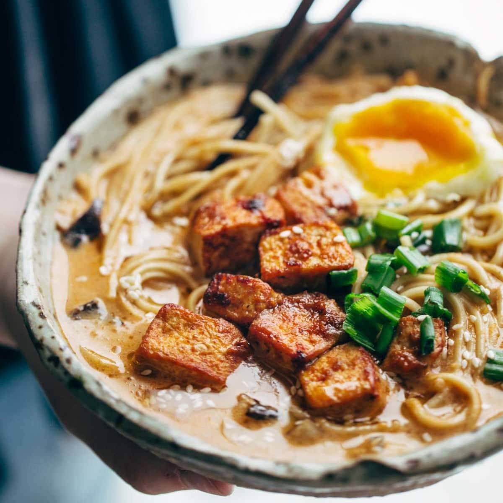

Recipe Details
A flavorful bowl of ramen that is beautiful from start to finish. What makes this recipe special is the sheer amount variety the creator can add or substract from it. This ramen bowl's strength exists not only in it's versatility, but the possible personalities it can take on.
Ingredients
- Dried noodles made for ramen broth.
- Your choice of broth. In terms of the flavor you want to go for, there isn't a wrong answer here.
- Tofu either cut into long pieces or in small squares.
- Olive oil, Avocado Oil, or Sesame Oil.
- Sliced Onions or Sliced Green Onions.
- Dried Seaweed.
- Red or White miso.
- Unsweetened soy milk.
Directions
- Pulse all miso paste indgredients together in a food processor util a smooth, thick paste forms.
- Press as much moisture as you can out of the tofu using paper towers or a tofu press. Cut into squares or long rectangles.
- In a large pot heat the oil on medium high heat and start frying the tofu.
- Once the tofu is brown, add the spicy miso pasta and cook for another minute to get the golden color. Remove from the pan and set aside.
- In the same pan, add a tablespoon of miso and shiitake then stir fry until golden brown. Add the stock broth and soy milk and bring to a simmer.
- Place a half cup of spicy miso paste on top of a very fine colander. Lower the colander halfway into the simmering soup then use a spoon to slowly dissolve the paste into the soup.
- Discard the solids remains in the colander and let the soup simmer for another 5 minutes.
- During this time, taste and adjust seasoning by adding salt or soy sauce in small amounts until it tastes like a spicy ramen broth.
- Cook the ramen noodles according to the package directions and drain them well. Optionally, you can boil your eggs during this step in a seperate pot.
- Divide the noodles into seperate bowls and top each serving with tofu, eggs, sesame oil, onions, or tomatoes. Of course, all of these steps are optional and you can add as many or as little indredients as you see fit.
Return to Main